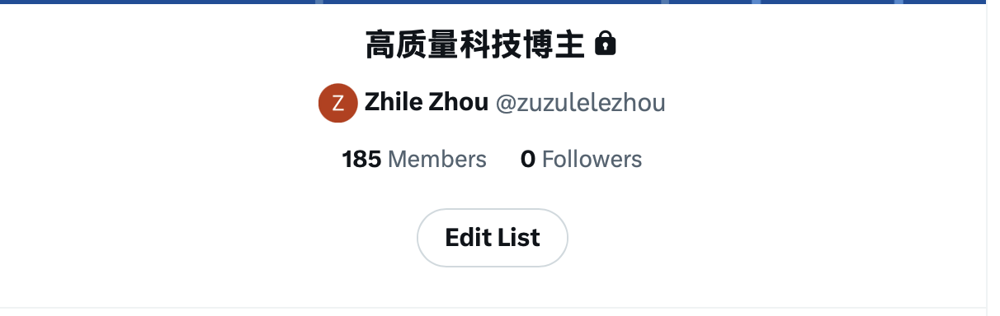

数 据 源 层
Trending 6 个 AI topic
Releases 12 个核心仓库
LangChain
vLLM
Ollama
+9
▼ 查看监控仓库列表
RSS 订阅源完整列表 · 27 个源 / 10 个分组
Tech Media (6)
TechCrunch AI · The Verge AI · Ars Technica · VentureBeat · Wired · MIT Tech Review
Official Blogs (4)
OpenAI Blog · Anthropic Blog · Google AI Blog · Meta AI Blog
Tech Community (3)
Hacker News · LessWrong · AI Alignment Forum
ML Platform (1)
Hugging Face Blog
AI 安全与对齐 (2)
Alignment Forum · 80000 Hours
VC / a16z (3)
a16z AI · Sequoia · First Round
中文播客 (2)
硅谷101 · 海外独角兽
Research Blog (1)
Lil'Log (Lilian Weng)
Benchmark (4)
LMSYS Arena Blog · Scale AI Blog · Aider Leaderboard · ARC Prize
GitHub 监控详情
Search API · Trending
按 AI/ML 关键词搜索近 24h 内新增星标最多的仓库
Releases API · 12 仓库
监控核心仓库新版本发布
transformers
llama.cpp
vllm
langchain
ollama
open-webui
dify
AutoGPT
gpt-engineer
stable-diffusion
whisper
pytorch
从来源发现到信号输出的全链路
来 源 发 现
账号来源 · MIT Bunny + 手动补充
x.mitbunny.ai 是一个 AI 领域 Twitter 账号聚合平台，维护着数百个 AI/科技从业者的账号目录。
我写了
sync.py 脚本自动抓取账号列表，筛选出约
200 个高质量账号，去掉广告号和低质量账号，再手动补充一些不在 MIT Bunny 里的优质账号。
▼
构 建
自动构建 List
为什么用 X List？List 是 Twitter 原生的分组功能 — 打开 List 页面就能看到所有成员的推文时间线聚合，一次请求拿到所有人的最新推文，效率高、请求少、不容易触发风控。

我的 X List · 185 Members · 私密列表
筛选后由 sync.py 自动批量添加到 X List。
▼
维 护
来源自动维护
定期重新抓取 MIT Bunny 最新名单，与当前 List 成员对比。
发现新增的高质量账号 → 脚本自动添加进 List，保持来源始终新鲜。
sync.py --fetch
抓取最新名单，对比当前 List 成员，输出差异清单。
--dry-run 模拟运行，预览变更。
--sync 正式执行，自动添加新账号。
▼
采 集
推文采集
使用 Playwright 打开 X List 页面，通过 stealth 插件掩盖浏览器指纹，每 2-5 小时随机触发（模拟真实用户访问节奏），配合每天手动养号（点赞、浏览等），降低账号被风控的概率。
▼
输 出
信号输出
采集到的推文转为统一 RawItem 格式，
汇入主流水线与其他 4 个数据源合并，进入 AI 分析引擎处理。
每天约产出 50-120 条推文数据，占总数据源约 30-40%。
5 个类别 · 每日 ≤25 篇
cs.AI 人工智能 · cs.CL NLP · cs.LG 机器学习 · cs.CV 视觉 · cs.MA 多智能体
Trending Models 15 个 · New Models 10 个
Trending Spaces 10 个 · 按 24h 增长排序
200+
→
10
每天从数百条噪声中，提炼出真正重要的 10 条信号
A I 分 析 引 擎
AI Analysis Engine · 三步流水线
对所有 RawItem 进行初筛和排序。
合并: 多源报道同一事件自动合并 · 去重: 已报道事件仅在有实质新信息时保留
筛选: 筛去互动量太少或主题不符合的内容
排序: 按来源权威性、互动量、新颖度排序 · 输出: 10 条信号
IN: 100-350 条原始数据 + 趋势 + 近 3 天历史信号（去重）
OUT: 10 条信号
▼
为每条信号生成: 为什么重要 + 接下来会怎样
IN: 10 条信号 + 趋势上下文 + 历史预测
OUT: 信号 + 洞察 + 预判
逐条深度分析，生成三层内容：
Signal: 发生了什么 · Insight: 为什么重要（≤80字） · Implication: 接下来会怎样（≤80字）
同时回顾历史预测，如有验证或推翻则标注自我修正。
▼
跨源模式识别，发现未被明确表述的趋势
IN: 10 条信号 + 已知趋势
OUT: 3-5 条趋势观察
在不同数据源的信号中寻找共同主题和隐含趋势。
例如 Twitter、GitHub、ArXiv 同时出现 Agent 相关内容 → 识别为趋势加速。
日 报 输 出
RedCity Webhook
POST /api/robot/webhook/send
msgtype: markdown · @all · Auto-retry with truncation
💬
Group Chat · 每日 10:00 CST
系统不只看今天
每一次分析都站在已有认知之上 —— 趋势在演变，预测在验证，记忆在积累
数 据 与 记 忆
每天处理 200+ 条信息，如果没有记忆，系统每天都从零开始——同一条新闻反复报、同一个趋势反复发现、预测了什么也不记得。
所以需要分层记忆：让它像人一样选择性遗忘，只留下真正有价值的认知积累。
工作台 — 原始数据和去重索引，用完可丢
sources.json
5 源原始采集条目合并存档（含 X 推文），每日覆写
weekly_signals.json
每日信号标题按周累积，用于日报去重（近 3 天）
日报成品 — 读者真正看到的东西
brief.json
日报核心产物：10 条信号 + 洞察 + 趋势观察，每天一份
认知积累 — 趋势演变、预测验证、周报成品
trends.json
≤50 个趋势的演变轨迹：加速 / 稳定 / 减弱 / 消退
history_insights.json
存储系统预判，供周报复盘 + 运营者评估预测准确率
weekly/*
深度洞察报告（.md / .json / .docx）
DATA FLOW
日报管道
每日 10:00 CST
READ
sources.json 今天有什么新东西？
trends.json 这条是新趋势还是旧趋势？
weekly_signals 这条昨天说过了吗？
→
PROCESS
信号提取 → 洞察生成 → 趋势更新
→
WRITE
brief.json 给读者看的成品
trends.json 记住今天观察到的趋势变化
weekly_signals 明天去重用
history_insights 记住预测，以后回头看对不对
周报管道输入重，输出精
每周一 10:30 CST · Cowork Skill
READ
brief.json × 7 这周每天发生了什么？
trends.json 哪些趋势在加速？
history_insights 之前的预测说对了吗？
weekly/* 上周说了什么，别重复
sources.json 需要时回查原始数据
→
→
WRITE
weekly/*.md 给读者的深度长文
weekly/*.json 结构化存档，供下周引用
周 报 流 水 线
ONE trend, told well.
每周从数百条信号中找到最重要的一个趋势，写一篇有论点的深度分析文章
不是填模板，不是轮换主题 —— 而是从数据出发，讲一个完整的故事
▼
🤝
Claude Cowork + weekly-insight Skill
schedule-task 定时触发 · Skill = SOP（流程 + 数据路径 + 输出规范）· 点击了解详情
📋
Skill = SOP
流程 · 数据路径 · 输出规范
📖
两轮阅读
渐进式披露 Progressive Disclosure
两个核心组件：
1) weekly-insight Skill — 我写的 SOP 文档，规定了完整流程：读哪些文件（路径写死）、怎么分析、输出什么格式、写到哪里。Claude Cowork 按这个 SOP 执行。
2) schedule-task — Cowork 自带的定时技能，每周日自动触发 weekly-insight Skill，无需人工启动。
两轮阅读 — 渐进式披露（Progressive Disclosure）：
像人一样，先通读一遍确定需要什么，再按需深挖。
第一轮（必读）：全周 brief.json + trends.json + 历史预判 + 上周周报
第二轮（按需）：sources.json 原始条目，仅当某条信号需要追溯原文时才读取
联网核查，不是闭门造车：深度分析阶段调用 WebSearch 技能，对所有数字、日期、事件进行联网交叉验证。无法核实的标注为"未经验证"。
Codewiz Claw → REDoc
Markdown 粘贴 → 一键生成 REDoc 链接 → 群聊分享
REACTIVE → PROACTIVE
Proactive AI
不是等你来问，而是主动告诉你应该知道什么
给 AI 的不是任务，是认知框架。
在框架内，它自主感知、自主判断、自主输出。
基 础 设 施 & 技 术 特 性
开发工具 · 全程 Claude Code 构建
整个项目从零到上线，全程使用 Claude Code 完成开发。周报通过 Claude Desktop 的 Cowork 模式生成深度分析。
Claude Code
项目架构设计 · 全部 Python 代码编写
Playwright 爬虫 · 调试 & 修复
部署配置
Cowork 模式 · 周报
每周一 10:30 AM 自动触发
Claude 读取全周数据 → 生成深度分析
人工审阅 → 发布
使用的 Skills
🛠 自己编写
weekly-insight
周报 Cowork 全流程
schedule-task
launchd 定时任务管理
redcity-markdown
webhook Markdown 语法
daily-ai-news
每日新闻多源采集
post-update-sync
改动后各层一致性检查
📦 Claude 官方
skill-creator
创建自定义 Skill
docx
周报导出 Word 文档
gh-cli
GitHub PR/Issue/CI
github-actions-workflow
CI/CD 工作流构建
senior-qa
测试生成与覆盖率
🌐 社区安装
system-architect
系统架构设计与选型
senior-prompt-engineer
Prompt 工程与优化
frontend-design
前端页面设计生成
doc-coauthoring
文档协作写作
局 限 性 与 改 进 方 向
当前局限
X 来源发现依赖第三方列表
时效性和筛选质量受限于上游
改进：购买 X 官方 API，自主管理关注列表
X 采集依赖 Playwright 爬虫
Cookie 过期、反爬风控随时可能中断
改进：同上，X 官方 API 彻底解决
本地部署依赖电脑开机
关机期间无法采集
改进：X 官方 API 去掉浏览器依赖后，即可迁移至 GitHub Actions 等云端 cron
DeepSeek V3 稳定性
偶发返回错误、分析深度不及 Claude
缓解：正式可切换 Claude
A n t h r o p i c 产 品 心 得
产品矩阵 = 一个团队
三个产品，三个角色，互相补位
Code
技 术 团 队
写代码 · 搭架构
测试 · 部署
Skills
中 台
向上沉淀 SOP
向下制定规范
两端不重复造轮子
Cowork
业 务 团 队
写文档 · 跑调度
数据分析 · 运营
组合使用思路
Skills
+
Cowork
技能插件库
Skills 定义做事标准
Cowork 在真实环境执行
→ 端到端自动化
例：竞品研究 Skill + Cowork 自动抓取整理
Code
+
Skills
标准化工程实践
Skills 装载团队规范
Code 写代码自动合规
→ 工程标准不走样
例：代码规范 Skill → Code 提交自动符合约定
Code
+
Cowork
技术 + 业务分工
Code 负责代码实现
Cowork 负责文档运营
→ 同一项目，两个搭档
例：Code 写代码部署 · Cowork 写文档分析数据
AI Frontier Insight · System Architecture · 2026